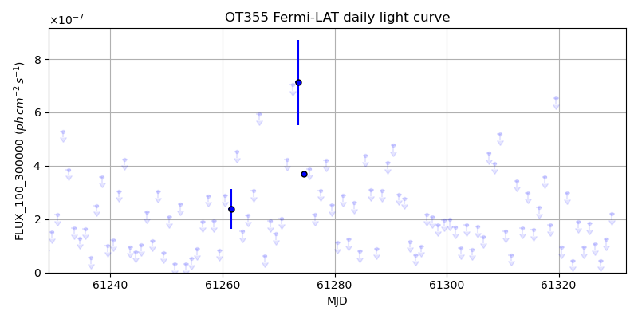
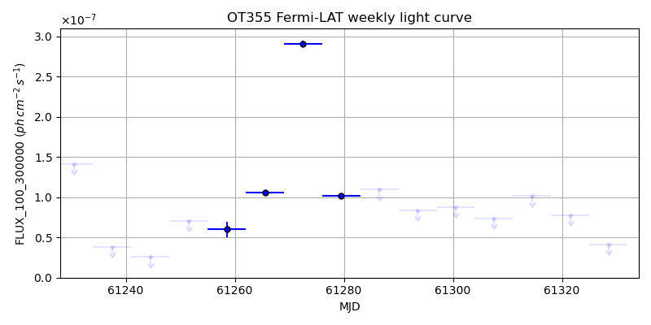
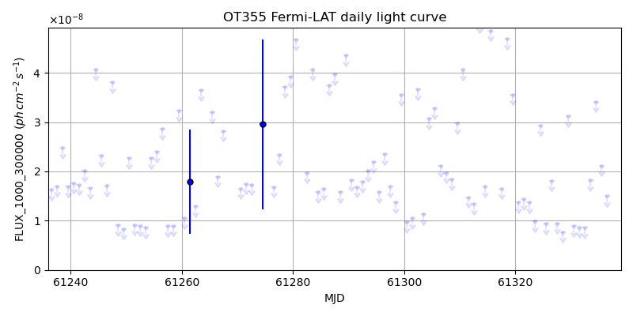
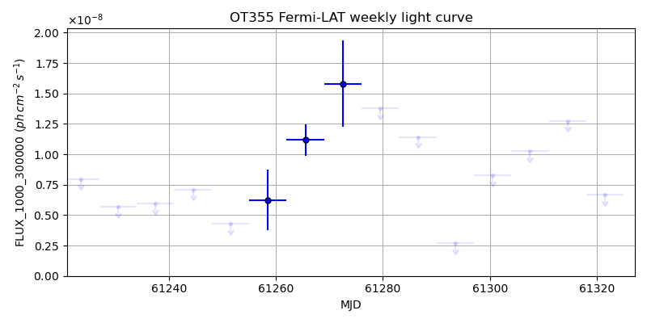

LAT Lightcurve site: https://fermi.gsfc.nasa.gov/ssc/data/access/lat/msl_lc/source/OT_355
NED: Query
Time of last update of this page: UT: 2026-10-17 15:24 (MJD: 61330.642)
| Property | Value |
|---|---|
| R.A. | 17:34:20.64 |
| Dec. | 38:57:50.4 |
| z | 0.970 |
| 3FGL SpectrumType | |
| 3FGL PL Index | -1.00 |
| 3FGL Flux_100_300000 | -1.00e+00 |
| 3FGL Flux_1000_300000 | -1.00e+00 |
| 3FGL Flux >200 GeV | -1.00e+00 |
| 3FGL Extrap. Crab >200 GeV | -1.00 |
| 3FGL Flux After EBL Absorption >200GeV | -1.00e+00 |
| 3FGL EBL Crab Fraction >200GeV | -1.00 |

| MJD | dMJD | Flux | dFlux | Frac3FGL | FracCrab>200GeV | EBLFracCrab>200GeV |
|---|---|---|---|---|---|---|
| 61325.50 | 0.50 | 1.83e-07 | 0.00e+00 | 0.00 | 0.00 | -0.00 |
| 61326.50 | 0.50 | 1.05e-07 | 0.00e+00 | 0.00 | 0.00 | -0.00 |
| 61327.50 | 0.50 | 4.51e-08 | 0.00e+00 | 0.00 | 0.00 | -0.00 |
| 61328.50 | 0.50 | 1.24e-07 | 0.00e+00 | 0.00 | 0.00 | -0.00 |
| 61329.50 | 0.50 | 2.20e-07 | 0.00e+00 | 0.00 | 0.00 | -0.00 |

| MJD | dMJD | Flux | dFlux | Frac3FGL | FracCrab>200GeV | EBLFracCrab>200GeV |
|---|---|---|---|---|---|---|
| 61293.50 | 3.50 | 8.38e-08 | 0.00e+00 | 0.00 | 0.00 | -0.00 |
| 61300.50 | 3.50 | 8.79e-08 | 0.00e+00 | 0.00 | 0.00 | -0.00 |
| 61307.50 | 3.50 | 7.38e-08 | 0.00e+00 | 0.00 | 0.00 | -0.00 |
| 61314.50 | 3.50 | 1.01e-07 | 0.00e+00 | 0.00 | 0.00 | -0.00 |
| 61321.50 | 3.50 | 7.77e-08 | 0.00e+00 | 0.00 | 0.00 | -0.00 |

| MJD | dMJD | Flux | dFlux | Frac3FGL | FracCrab>200GeV | EBLFracCrab>200GeV |
|---|---|---|---|---|---|---|
| 61325.50 | 0.50 | 9.36e-09 | 0.00e+00 | 0.00 | 0.00 | -0.00 |
| 61326.50 | 0.50 | 1.81e-08 | 0.00e+00 | 0.00 | 0.00 | -0.00 |
| 61327.50 | 0.50 | 9.49e-09 | 0.00e+00 | 0.00 | 0.00 | -0.00 |
| 61328.50 | 0.50 | 7.71e-09 | 0.00e+00 | 0.00 | 0.00 | -0.00 |
| 61329.50 | 0.50 | 3.12e-08 | 0.00e+00 | 0.00 | 0.00 | -0.00 |

| MJD | dMJD | Flux | dFlux | Frac3FGL | FracCrab>200GeV | EBLFracCrab>200GeV |
|---|---|---|---|---|---|---|
| 61293.50 | 3.50 | 2.69e-09 | 0.00e+00 | 0.00 | 0.00 | -0.00 |
| 61300.50 | 3.50 | 8.28e-09 | 0.00e+00 | 0.00 | 0.00 | -0.00 |
| 61307.50 | 3.50 | 1.03e-08 | 0.00e+00 | 0.00 | 0.00 | -0.00 |
| 61314.50 | 3.50 | 1.28e-08 | 0.00e+00 | 0.00 | 0.00 | -0.00 |
| 61321.50 | 3.50 | 6.67e-09 | 0.00e+00 | 0.00 | 0.00 | -0.00 |
--------------------------------------------------------- Using user-supplied coords: 17:34:20.64 38:57:50.4 2000 --------------------------------------------------------- FLWO UT night of: 2026-10-18 Local Sid. @ Midnight: 01:23 Sunset (-15.0) (local, UT): 18:56 01:56 Sunrise (-15.0) (local, UT): 05:22 12:22 Moonrise (local, UT): Moonset (local, UT): 22:59 05:59 Moon phase: 0.47 --------------------------------------------------------- AzTime LSID UT Obj_el Obj_az Mn_el Mn_az Sep. --------------------------------------------------------- 18:56 20:18 01:56 56.2 294.0 30.5 195.3 69.6 19:26 20:48 02:26 50.3 294.4 28.5 202.5 69.6 19:56 21:18 02:56 44.5 295.4 25.9 209.3 69.6 20:26 21:48 03:26 38.8 296.9 22.6 215.6 69.6 20:56 22:19 03:56 33.1 298.7 18.8 221.3 69.6 21:26 22:49 04:26 27.6 300.8 14.5 226.6 69.5 21:56 23:19 04:56 22.1 303.1 9.9 231.4 69.5 22:26 23:49 05:26 16.9 305.8 5.0 235.7 69.5 22:56 00:19 05:56 11.8 308.8 0.2 239.8 69.5 23:26 00:49 06:26 7.0 312.0 -5.5 243.5 69.5 23:56 01:19 06:56 2.5 315.6 -11.3 247.0 69.5 00:26 01:49 07:26 -1.2 319.6 -17.0 250.4 69.5 00:56 02:19 07:56 -5.9 323.9 -22.8 253.6 69.5 01:26 02:49 08:26 -9.6 328.6 -28.7 256.7 69.6 01:56 03:19 08:56 -12.7 333.6 -34.7 259.8 69.6 02:26 03:49 09:26 -15.3 339.1 -40.7 263.0 69.6 02:56 04:20 09:56 -17.2 344.8 -46.8 266.4 69.7 03:26 04:50 10:26 -18.6 350.8 -52.8 270.1 69.7 03:56 05:20 10:56 -19.3 356.9 -58.9 274.3 69.8 04:26 05:50 11:26 -19.3 3.1 -64.9 279.6 69.8 04:56 06:20 11:56 -18.6 9.2 -70.8 287.0 69.9 05:22 06:46 12:22 -17.5 14.4 -75.7 297.1 70.0 --------------------------------------------------------- Dark hours >55 deg.: 0.00